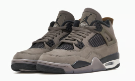

Air Jordan 4 Retro "Cave Stone" (GS)
€150
Descripción
La Air Jordan 4 Retro "Cave Stone" (GS) es una zapatilla que destaca no solo por su diseño innovador, sino también por su calidad excepcional, fiel a la reputación de la marca Jordan. Diseñada para los más jóvenes que desean combinar estilo y comodidad, esta zapatilla presenta un atractivo color marrón que se complementa perfectamente con sus materiales de primera calidad, como la goma y la piel. Ideal para cualquier ocasión, la Air Jordan 4 Retro "Cave Stone" (GS) no solo proporciona un ajuste cómodo, sino que también eleva cualquier look casual con su inconfundible estética retro.